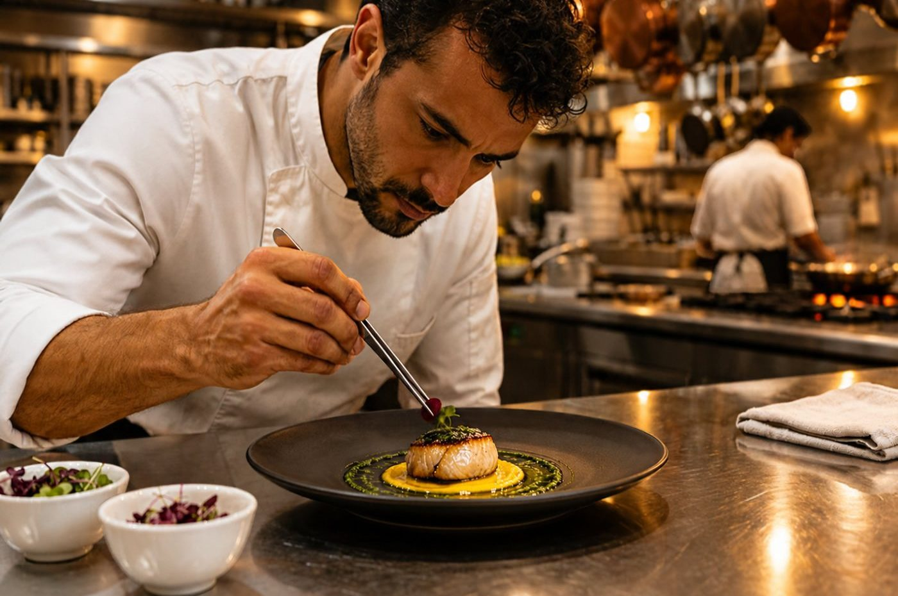

Bela Vista, São Paulo
Drinques autorais e cozinha aberta até uma da manhã.
Reservas pelo WhatsApp, manobrista no almoço e no jantar e salão reservado para grupos de até quarenta pessoas.

- 50
- anos de casa
- 120
- lugares no salão
- 3
- gerações na cozinha
- 4,8
- nota média no Google
A casa
Além do salão, a cozinha atende eventos, encomendas e entregas no bairro.
Almoço
De terça a domingo, com pratos do dia e menu executivo nos dias úteis.
Jantar
Cardápio completo, carta de vinhos e sobremesas feitas na casa.
Eventos
Aniversários, confraternizações e jantares de empresa em salão reservado.
Encomendas
Massas frescas, molhos e sobremesas para levar, com um dia de antecedência.
Entrega
Pedidos pelo WhatsApp, com entrega própria em um raio de cinco quilômetros.
Vale-presente
Jantar para dois com entrada, prato, sobremesa e vinho.

“Massa fresca, molho de panela e mesa farta”
Entradas
- Bruschetta al pomodoroPão da casa tostado, tomate, alho e manjericãoR$ 32
- Burrata com tomate assadoAzeite extravirgem, flor de sal e pão de fermentação naturalR$ 58
- Polpette al sugoAlmôndegas de carne e pecorino ao molho de tomateR$ 44
- CarpaccioLâminas de filé, rúcula, alcaparras e parmesãoR$ 52
Pratos da casa
- Tagliatelle al ragùRagu de cinco horas, receita da fundadoraR$ 74
- Ravioli de ricota e espinafreNa manteiga de sálvia com nozes tostadasR$ 72
- Lasanha à bolonhesaSete camadas, bechamel e parmesão de 24 mesesR$ 78
- Galeto ao limãoAssado na brasa, com polenta cremosaR$ 84
Sobremesas
- TiramisùReceita de 1974R$ 34
- Panna cottaCom calda de frutas vermelhasR$ 30
- Cannoli sicilianiRicota doce, laranja cristalizada e pistacheR$ 32

Comemoro meu aniversário aqui desde os quinze anos. Mudaram os garçons, mudou a decoração, mas o ragu continua exatamente o mesmo.
Perguntas frequentes
- Precisa reservar?
- Às sextas, sábados e domingos recomendamos reservar. Nos outros dias, costuma haver mesa na hora.
- Vocês têm opções vegetarianas?
- Sim. Há entradas, massas e um prato principal sem carne, e adaptamos outros a pedido.
- Posso levar o meu vinho?
- Pode. Cobramos taxa de rolha de R$ 60 por garrafa.
- Aceitam grupos grandes?
- Temos um salão reservado para até quarenta pessoas. Fale com a gente com dois dias de antecedência.